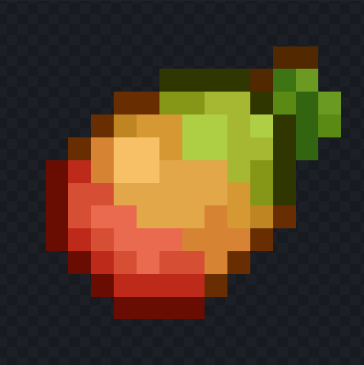

Soy Luis Gaitán, un estudiante del Instituto Emiliani Somascos, estoy en 6to Computación, soy alguien que le encanta cualquier cosa relacionada a computadores, y me encanta programar y realizar proyectos propios en diferentes campos como web y videojuegos.
Mi sueño es lograr graduarme y seguir expandiendo mis conocimientos para llegar a ser un desarrollador de aplicaciones y de videojuegos, a su vez dedicarme en segundo plano en el desarrollo web.